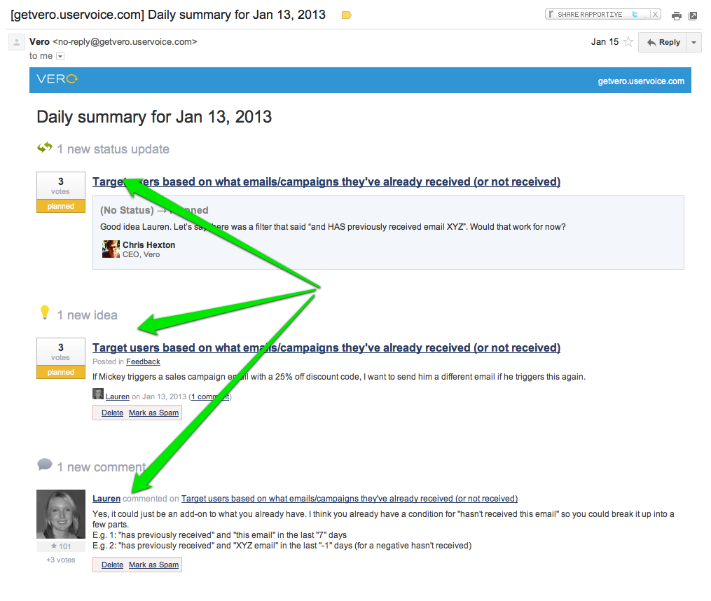

How do you get more customers?
If you ask people that question you’ll usually hear things like: “good marketing”, “build something people want”, “have amazing customer service” and so on.
None of these answers are wrong but they are a bit vague.
So how about something a little more practical?
Email marketing is a powerful way to help you both acquire customers at the top of the funnel and ensure they become active users and also to drive retention and referral to ensure customers convert and stick around for the long term.
These examples from five market-leading online businesses will give you some practical examples of email marketing in action and how it can help you improve the conversions at the top and middle of your funnel.
The key take away for me, and something I’ve been drilling down on lately, is to focus on email as part of your entire customer journey. Email and your product are intertwined: your campaigns need to make sense relative to the user experience on your website and you need to think about which aspects of your website you can use to drive savvy email campaigns!
1. ACTIVATE those customers: UserVoice
UserVoice is a B2B SaaS Help Desk and Community Support application with over 120,000 users.
I think you’ll agree that’s a pretty damn large user-base for a SaaS application: they haven’t gotten to where they are without learning a few email marketing tricks along the way.
UserVoice have a fantastic welcome series to help nudge new users in the right direction. These emails work together to form one of the most effective B2B lifecycle campaigns I’ve seen.
The first email new users receive is this welcome email from Richard (the founder):
A great email: it is simple, there’s a nice big picture of Richard and the message is clear. Remember: you’re not sending a welcome email that says “Hey there, here’s your email and password”, you’re starting a conversation with your user that results in increased trust. For some more tips, checkout this similar example from HipChat and what five optimisation experts thought of their efforts.
They also send you this email from your new help desk on their platform when you signup. I love this: it’s thinking outside the box and demoing the product in action. This ties the email back to the product as you can see the ticket in your inbox and also when you log in to UserVoice.
In the succeeding days UserVoice send a few more emails in series, including these two:
- From their Product Manager, Dejana:
- From their Communicty Manager, Evan:
I really like these emails as there is no bullshit, they’re plain text, they use personal email addresses and they’re short, including links to the right places on UserVoice’s site. These are the sorts of emails that customers actually respond to!
UserVoice lets your customers suggest ideas for your business. When you get your first ‘idea’ (i.e. customer recommendation) you’ll receive an email like this:

This makes you feel great: one of your customers is contributing to your business! You can turn these emails off but it’s obvious for UserVoice to leave them on by default.
UserVoice also send you an email at the 20 day mark with the subject ‘Your site looks good’. Again, this email gives you a sense of momentum, you feel like you’re on a roll with their product:
UserVoice Your Site Looks Great
What emails can you send to engage customers and build momentum and trust?
2. RETAIN new users by building habits: Spotify
I love Spotify. I also love their email marketing. With projected revenues of $890M in 2013, Spotify is fast becoming an institution.
Having a desktop app means there is definitely a speed hump to getting customers up and listening but, for Spotify, getting customers into the habit of using playlists and coming back daily is the ‘lock-in’ that gets customers to become premium users.
The fact that Spotify are good at this is the reason they are growing so rapidly: once you invest in your Spotify playlists and shares you’re pretty unlikely to leave!
When you first join Spotify you get this welcome email:
.
A solid email with a big green button! I like but the things that really start to engage and retain you (once you’ve got Spotify installed) are the trigger-based emails you’ll receive.
For example, you’ll get emails:
- When a Facebook friend joins (super smart by Spotify to require you to use Facebook to join).
.
- When a Spotify user follows you.
.
These emails are powerful as they’re super targeted. They give you a sense of achievement and begins to open you to the social side of Spotify: when someone follows your playlist they are validating your musical taste. This is a really positive thing and it reflects very positively on Spotify – that’s why this is a smart campaign.
As you might know, the freemium version of Spotify has ads in between every few songs. The most interesting campaign you’ll receive from Spotify is the email they send after you elect to take a 48 hour free trial of their Premium plan, which has no ads.
48 hours is an odd period for a free trial, you might be thinking…and so it is. Once you take up their offer however, they send you this:

So, after offering you a 48 hour free trial they immediately offer you a 30 day free trial?
I don’t know for sure but I think the reasoning behind this is that Spotify want this email to enter your subconcious. Many Spotify users are ‘happy enough’ with the free plan and are probably sceptical going into the 48 hour trial.
I think Spotify want employ such a short trial by default so that, after 48 hours, you go back to listening to ads every few songs…and, having experienced 48 hours of pure, ad-free music, you’ll slowly your brain nagging you to get rid of them: you’ll do ANYTHING to make them stop.
…and then you remember the email with the 30 day trial, take it, get really, really used to no longer having ads and, ultimately, upgrade permanently.
A really unique strategy: something to think about in the context of your own application. Spotify’s ads are annoying and, at first, most users will live with them. This series of emails helps wean customers onto the paid plans slowly.
3. Use email to drive REFERRAL: LinkedIn
I’m not sure who heads up Email Marketing at LinkedIn but they know what they’re doing.
You might recognize this campaign from earlier this year:
I think you’ll agree that it’s pretty clever as it makes you feel special: after all, you’re in the top 1% of users on LinkedIn!
Using a little maths and you can determine that the top 1% is made up of 2,000,000 people.
That’s where the campaign is really clever: LinkedIn used maths to make each individual customer feel special, despite engaging over 2,000,000 people!
A prime example of what they’re capable of, LinkedIn uses email equally as effectively when on-boarding new users and encouraging those users to share the platform.
This is an example of the email you’ll get when someone connects with you on LinkedIn. When you first sign up you get a fairly constant barage of these emails the friends you have that are already on LinkedIn start to see your profile and add you like crazy:
.
This is a great email. Check out the subject line in particular: it uses your name and it looks like it comes from the inviter, one of your friends.
Previously, LinkedIn used this subject line:
The new one seems much more personal and is likely more effective.
LinkedIn spend a lot of time optimising their referral program. Email is a big part of getting current customers to refer new customers and drive more traffic through the top of the funnel.
They actively encourage you to invite users outside of the LinkedIn universe and they make it super easy to do:
The email they send to an invited, non-LinkedIn user is great as well:
The biggest takeaway from this email is the call to action: Confirm you know Chris. Rather than saying “Sign up to LinkedIn” or something vague like that, LinkedIn simply ask you to confirm you know a friend. Which you do, right? Now, that’s effective.
Some of the other related email marketing initiatives that encourage you to grow your network include the ‘endorsement’ program, a recent addition:
Endorsements provide a sense of achievement which is important for keeping users engaged and getting them to interact with others in their immediate and extended networks.
A final example is the ‘See who viewed your profile’ campaign that you receive every few days as a LinkedIn user:
This can feature anyone who viewed your profile, whether you’re connected or not. This email again encourages you to check out LinkedIn users you may never otherwise come across and also to think about other, related friends you could invite to the LinkedIn platform.
4. Bring back INACTIVE users: Dropbox
It’s pretty easy to forget that one, reasonably qualified, source of new paid customers is customers that have previously signed up.
This might be customers who you haven’t emailed in a while, or customers that went through your trial but never subscribed or customers that purchased from you in the past but you have taken out of your regular sending loop.
It’s really important to think about these segments from time to time. At some point you need to recognise when a user is no longer worth retaining on your email marketing list but sending product updates or snippets of relevant news can be a very effective way of getting new customers.
Dropbox is great at this. Take this email introducing their new mobile apps:
Would there have been customers who elected to re-engage or even start paying for the app now they could use it on their mobiles? You bet.
This campaign follows suit, sharing some other, third-party apps that might increase your Dropbox usage:
…and another when they released their useful ‘links’ feature, so you can share you files directly:
The point of all of these campaigns is to let you know a little something that might pique your interest enough to become a re-activated or regular user of Dropbox. For Dropbox, it’s simple: the more you use, the more likely you are to upgrade.
Then there are the logical little nudges such as targeting users or customers that have gone quiet but were previously active:
This email is one of my favourites as it kills three birds with one stone: a) it reminds active customers they can get more space, b) it encourages referrals and c) it gives inactive users a reason to get back on board if space was a previous concern.
Remember: be loud and proud about your company’s direction and share relevant updates with your customers. This is a great way to get more customers so think about which segments of users you haven’t emailed for a while or to whom you always email the same style of campaign.
What new announcement or tweak can you email your inactive customers to get them to re-active?
5. Come up with something OUTSIDE the box: Twitter
Twitter has always been acknowledged as masters of product marketing. They understand the need to get customers engaged quickly.
To start with they do some similar things to LinkedIn (above), like encouraging users to invite new users via email:
This is a great email in my opinion as the images are of people who have invited me and, 9 times out of 10, they’ll be familiar faces.
They’re front-and-center and this is powerful.
If you’re a new user you’ll also get emails like this:
These emails serve as both discovery and suggestion. Perhaps you’ll know the people mentioned, perhaps you won’t…either way, it’s interesting. Many of the profiles in these emails appear to be ‘high rollers’ in the Twitter world: i.e. they are profiles with a lot of followers. This re-inforces the power of Twitter and what you can achieve, making for a great campaign.
…but how do Twitter think outside the box? Here’s a little something Dan Leveille talks about on his Product Design Inspiration blog:

Wondering how this campaign works? Well, if you haven’t ticked this little box inside Twitter’s settings:
…you can’t be found by new users who search for friends using your email address. This is, of course, not ideal for Twitter! They want you to be searchable by your email so new customers can find profiles to follow faster, activting sooner and having a better product experience all round.
So, to promote this, Twitter has created this campaign. When a new user does upload their address book to Twitter in order to find a match via their friends’ emailaddress, rather than showing that user your profile (which they can’t do until you tick that box) they email you and ask you to tick the checkbox.
This is an extremely interesting tactic and a good example of an aggresive campaign in practice. The tone and style of this email make it look like you’ve done something wrong as well, meaning it probably drives a high conversion rate. This is a powerful email but it won’t be for everyone.
Think outside the box in your business: how can you use email to implicitly drive a core part of your customer experience?
Over to you
There are a ton of great campaign examples up above that you can use as inspiration for your activation, retention, referral and other campaigns. Borrow from the simplicity of these campaigns, the tenacity of them and make your campaigns a deep and meaningful part of your customers’ first experience with your product.
What campaign sticks out as being the most useful for you?